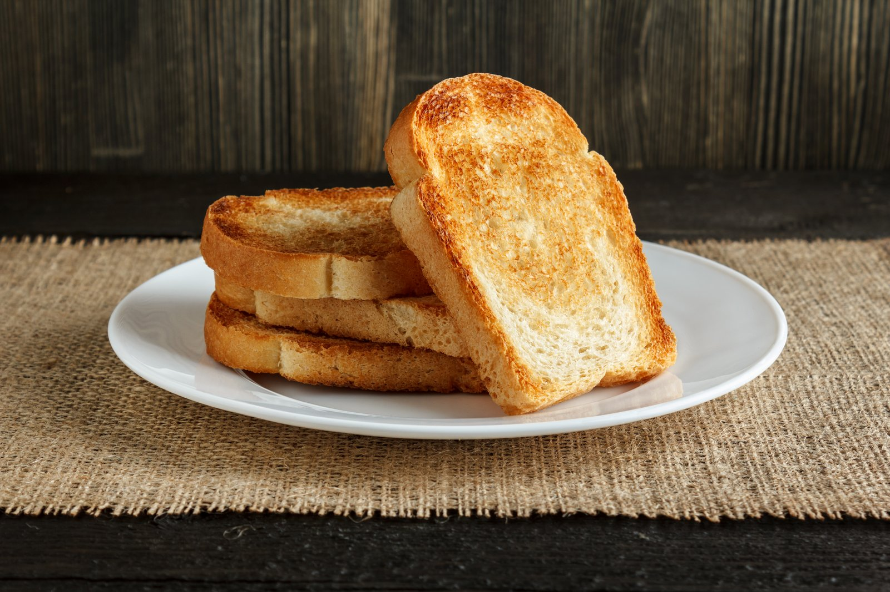

This is how to make Toast

Toast
This is toast, it's really just twice baked bread but it's good this way so make it.
No, we will not be making french toast today. Just regular toast.
Ingredients
- Bread
- Whatever toppings you want
Steps:
- Take your bread and put it in the toaster. If you don't have one put it in a hot pan
and cook both sides for a couple minutes.
- Toast is really simple I don't know why you're even looking this up
- Once the bread is golden brown take the toast and put whatever toppings you want on it
I like butter or peanut butter.